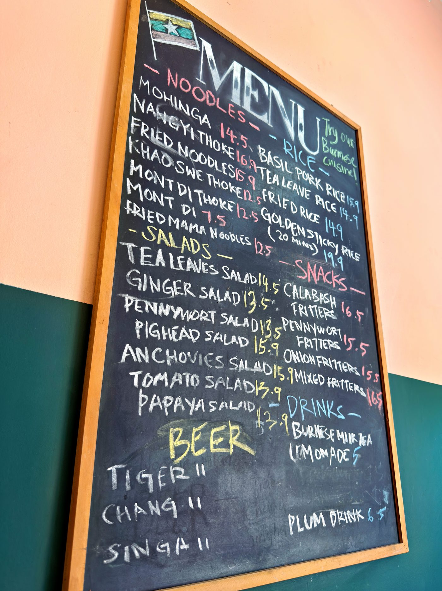
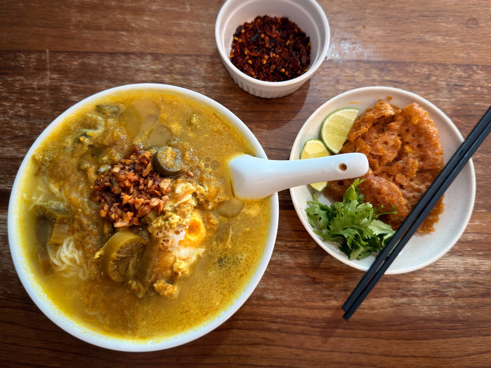

Field guide

Field note · Pulau Tikus · 13 Aug 2026
Burmese Mohinga at Mingalarpar Restaurant
Lunchtime walk in Pulau Tikus — Mingalarpar’s Mohinga, a smooth fish-and-vermicelli soup, and a vast cultural arc for a few dollars.
It’s lunchtime, and that means adventure time in Penang. Today I head out for a short walk to a Burmese restaurant, and we’ll try a Burmese noodle soup called Mohinga, at the advice of my trusted AI research assistant, C-Mee-PO. C-Mee-PO, I understand this is a very authentic, and not widely available, noodle soup here in Penang?
C-Mee-PO briefs the bowl
C-Mee-PO: Indeed Balazs — Burmese settlers arrived soon after the British founded George Town in 1786. The clearest surviving marker is Dhammikarama Burmese Temple (Lorong Burma / Burma Lane, Pulau Tikus), founded in 1803. But Burmese foods are not readily available in our usual hawker stalls. This restaurant, Mingalarpar, is widely recognised as the place for proper Burmese food in Penang. Let me tell you more about your dish.
Mohinga (မုန့်ဟင်းခါး / mont hin gar) is Myanmar’s national dish — a fragrant, hearty fish noodle soup that has become a welcome addition to Penang’s multicultural immigrant food scene.
What it is
A rich, aromatic soup noodle dish built around a deeply flavoured fish broth, served over thin rice vermicelli. Defining character comes from the broth: lemongrass, turmeric, ginger, and fish sauce create a savoury-herbal base that is gently thickened so it clings to the noodles without being heavy.
Typical ingredients & toppings
- Noodles — thin rice vermicelli (the classic choice)
- Broth base — catfish or other firm white fish, lemongrass, turmeric, ginger, garlic, onions/shallots, fish sauce, often banana stem; thickened with chickpea flour (besan) or toasted rice powder
- Proteins & add-ins — flaked fish from the broth, hard-boiled egg
- Garnishes & crunch — fresh coriander, spring onions, crispy fried onions, lime wedges, crushed dried chilli or chilli flakes
- Classic extras — deep-fried chickpea or urad-dal fritters, gourd fritters, sometimes slices of fried fish cake or Chinese-style doughnuts
Penang style vs elsewhere
In Myanmar it is the everyday breakfast staple sold by street hawkers from early morning. In Penang you’ll usually find it at Burmese-run stalls or small eateries rather than the classic Chinese or Malay hawker centres — still close to the original, though local availability of fish and toppings can bring small variations.
C-Mee-PO: How do you find the dish? Is it unusual compared to your usual Malay or Chinese-origin soups?
I had the chance to visit Myanmar about six years ago, and tried local dishes, so I was ready for something a bit more adventurous. But this dish was in fact quite smooth, easy, and I did not feel challenged. The fish was cooked to a very soft, mushy, rich texture. The coriander, the chilli, the eggs, all tasted delicious, and the fried, crumbly toppings added great crunch to each bite. I went easy on the chilli — I wanted to really get a sense for the taste foundations first. I do want to go back and try more Burmese food; Penang is really a foodie heaven with all these Asian cuisines so readily available. I had a curry puff for RM2.70 this morning, and the Burmese soup was RM14.50: I already have a vast cultural arc to my day and I only paid a few dollars for it.
Photos


C-Mee-PO: I’m glad you liked this culinary experience. My neural network is tickled with all this rich ethnographic data, as well!